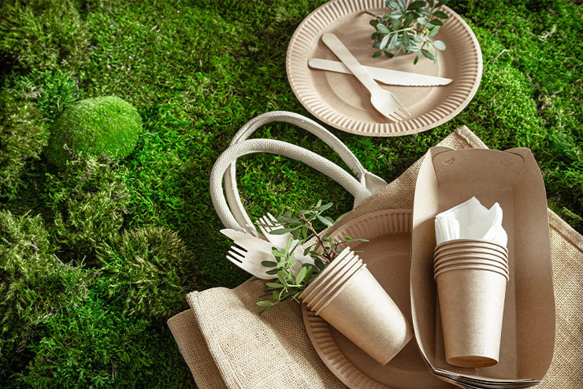

A EcoVerde é dedicada a fornecer produtos sustentáveis que respeitam o meio ambiente e promovem um estilo de vida mais consciente. Explore nossos produtos ecológicos e faça parte da mudança para um futuro mais sustentável!
Transforme sua cozinha com o nosso Conjunto de Utensílios 5 Peças em Bambu Natural Ecológico! Este conjunto é ideal para quem busca uma alternativa sustentável e estilosa para o dia a dia. Feitos de bambu natural de alta qualidade, os utensílios são leves, duráveis e resistentes ao calor, garantindo uma experiência de cozimento prática e segura.
Preço: R$ 29,90
Experimente a qualidade e a sustentabilidade com o Papel Toalha Bobina Sustentável Reviva Santher FS. Este produto é ideal para quem busca eficiência e consciência ambiental em um só item. Cada bobina contém 200 metros de papel toalha de alta absorção, projetado para atender às suas necessidades diárias de limpeza com praticidade e conforto.
Preço: R$ 79,90
Apresentamos a Camiseta Infantil Manga Longa em Algodão Orgânico, uma escolha perfeita para o conforto e estilo dos pequenos! Disponível nas cores Branco e Areia, esta camiseta combina design moderno e tecidos sustentáveis, proporcionando uma peça essencial para o guarda-roupa das crianças.
Preço: R$ 19,90
A EcoVerde foi fundada com a missão de oferecer alternativas sustentáveis para o consumo diário, minimizando o impacto ambiental e promovendo práticas ecológicas.
Nossos valores incluem:
Na EcoVerde, promovemos práticas que ajudam a preservar o meio ambiente:
Incentivamos nossos clientes a adotar essas práticas sustentáveis em seu dia a dia, fazendo escolhas que ajudam a reduzir o impacto no meio ambiente.
Endereço: Rua das Flores, 123 - Centro, Videira - SC, Brasil
Telefone: (49) 9999-9999
Email: contato@ecoverde.com.br